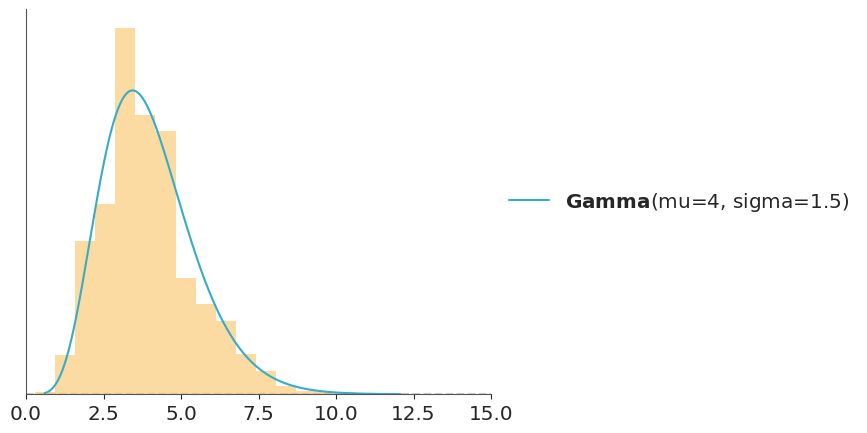

7 Model Comparison
7.1 Overview
Models are designed as approximations to help us understand a specific problem or a related class of problems. They are not intended to be exact replicas of the real world. In this sense, all models are “wrong.” However, not all models are equally wrong, some are better suited to particular aspects of a problem. For example, a model that is good for high-temperature observations may perform poorly for low-temperature observations.
In a typical data analysis, it’s common to develop multiple models that fit the same data. These models may differ in aspects such as priors, likelihoods, linear versus nonlinear terms, interactions terms, etc. When several plausible models are available, a key question arises: how should we choose between them?
Understanding the goals of the analysis and the problem at hand often provides valuable guidance. Models rarely incorporate all of our prior knowledge, so this additional information can help us evaluate and compare them. Prior and posterior predictive checks (see Chapter 5) and computational diagnostics (see Chapter 4) can further inform model choice (a model we can not fit well is a model we can not trust!). Even convention and tradition may influence selection, although scientific reasoning should ideally prevail over tradition.
In this chapter, we provided a theoretical, yet accesible, foundation for a series of methods for efficient model comparison. Later in Chapter 8, Chapter 10, and Chapter 9 we provided applied examples of these methods.
7.2 The balance between simplicity and accuracy
When comparing models, we seek a balance between simplicity and accuracy. Occam’s razor suggests that, among equally plausible explanations, the simplest should be preferred. In modeling, simplicity is often measured by the number of parameters, while accuracy reflects how well a model fits the data. Ideally, we want models that fit the data well without overfitting.
Overfitting occurs when a model captures not only the underlying patterns but also random noise. Such models perform well on the data used for fitting (within-sample error) but poorly on new, unseen data. Overfitting is more likely in highly flexible models with many parameters or when the model structure is overly complex. Detecting it requires evaluating performance on data not used for fitting, motivating out-of-sample measures such as cross-validation or information criteria.
Bayesian models are generally less prone to overfitting than many alternative approaches. This is because priors constrain the parameter space, and computing the posterior involves averaging over these priors rather than committing to a single point estimate. As a result, even highly flexible Bayesian models often avoid the extreme overfitting seen in classical settings. A typical text book example of overfitting is a polynomial with as many degrees of freedom as data points. This will indeed badly overfit under optimization-based methods, but a Bayesian model with even quite vague priors will provide a reasonable solution. Priors can even stabilize models with more parameters than observations, and for decades we have known that Bayesian methods can handle models with infinitely many parameters, such as Gaussian processes. However, this protection is not automatic. Bayesian models with very vague priors are more prone to overfitting, while models whose priors induce a prior predictive distribution consistent with domain knowledge tend to be more resistant to it.
7.2.1 Predictive accuracy measures
Evaluating a model only on the data used to fit it usually gives an overly optimistic view of its performance, a problem known as overfitting. Instead we prefer to evaluate a model in terms of its predictive accuracy, i.e. it’s capacity to predicte unobserved data.
The simplest way to do this is to use separate training and test datasets. But in practice, data is often limited, and setting aside part of it can be wasteful. Because this situation is so common, many methods have been developed to estimate predictive accuracy without wasting data.
We will focus on two families of methods:
- Cross-validation: Divides the data into subsets that are alternately used for fitting and evaluation, effectively simulating a hold-out set while still using all data for inference.
- Information criteria: Approximate out-of-sample accuracy by combining in-sample fit with a penalty for model complexity.
7.3 Cross validation
Cross-validation is a simple and, in most cases, effective solution for comparing models. We take our data and divide it into \(K\) slices. We try to keep the portions more or less the same (in size and sometimes also in other characteristics, such as an equal number of classes). We then use \(K-1\) portions to train the model and the rest to evaluate it. This process is systematically repeated, leaving, for each iteration, a different portion out of the training set and using that portion as the evaluation set. This is repeated until we have completed \(K\) rounds of adjustment–evaluation. The accuracy of the model will be the average over the \(K\) rounds. This is known as \(K\)-fold cross-validation. Finally, once we have cross-validated, we use all the data to fit our model, and this is the model that is used to make predictions or for any other purpose.

When \(K\) is equal to the number of data points, we get what is known as leave-one-out cross-validation (LOO-CV).
Cross validation is a routine practice in machine learning. And we have barely described the most essential aspects of this practice. For more information you can read The Hundred-Page Machine Learning Book or Python Machine Learning, by Sebastian Raschka.
One downside of cross-validation is that it is computationally expensive. We need to fit the model \(K\) times, and if we have a large dataset, this can be very expensive. But lucky us, by being Bayesian we can approximately compute LOO-CV in a very fast way, as discussed later in Section 7.5. But before that we are going to discuss information criteria, because as we will see LOO-CV is actually related to these methods.
7.4 Information criteria
Information criteria are a collection of closely related tools used to compare models in terms of goodness of fit and model complexity. In other words, information criteria formalize the intuition we developed at the beginning of the chapter. The exact way these quantities are derived has to do with a field known as Information Theory.
An intuitive way to measure how well a model fits the data is to calculate the root mean square error between the data and the predictions made by the model:
\[ \frac{1}{N} \sum _{i}^{N} (y_i - \operatorname{E} (y_i \mid \theta))^2 \]
\(\operatorname{E} (y_i \mid \theta)\) is the predicted value given the estimated parameters. It is important to note that this is essentially the average of the difference between the observed and predicted data. Taking the square of the errors ensures that differences do not cancel out and emphasizes larger errors compared to other alternatives such as calculating the absolute value.
The mean square error may be familiar to us since it is very popular. But if we stop and reflect on this quantity we will see that in principle there is nothing special about it and we could well come up with more general expressions. In order to do that we are going to first discuss to two useful concepts, entropy and the Kulback-Leibler divergence.
7.4.1 Entropy
For a probability distribution with \(N\) possible different events which each possible event having probability \(p_i\), the entropy is defined as:
\[ H(p) = - \mathbb{E}[\log{p}] = -\sum_i^N p_i \log{p_i} \]
Entropy is a measure of the uncertainty of a distribution. In this sense we can say that the uncertainty contained in a distribution is the logarithm of the average probability of an event. If only one event is possible the entropy will be 0, if all events have the same probability the entropy will be maximum. The concept of entropy can be extended to continuous distributions, but we will not go into those details. Figure 7.1 shows the entropy of a Bernoulli distribution for four different values of the probability of success. We can see that the entropy is maximum when the probability of success is 0.5, and minimum when the probability of success is 0.
The concept of entropy appears many times in statistics. It can be useful, for example when defining priors. In general we want to use a prior that has maximum entropy given our knowledge (see for example PreliZ’s maxent function). And also when comparing models as we will see in the next section.
7.4.2 KL divergence
The Kulback-Leibler divergence is a measure of how one probability distribution diverges from a second expected probability distribution. Suppose we have a target distribution \(p\), with which we cannot work directly and we only have access to a different distribution that we will call \(q\). We want to evaluate how well \(q\) approximates \(p\). One way to do this is to measure the Kulback-Leibler divergence between \(p\) and \(q\). If \(q\) is a parametric family we can find the parameters making \(q\) as close to \(p\) as possible by minimizing the KL divergence. The KL divergence is defined as:
\[ \mathbb{KL}(p \parallel q) = \overbrace{-\sum_i^N p_i \log{q_i}}^{H(p, q)} - \overbrace{\left(-\sum_{i}^n p_i \log{p_i}\right)}^{H(p)} \]
Notice that it has two components, the entropy of \(p\), \(H(p)\) and the cross entropy \(H(p, q)\), that is, the entropy of \(q\) but evaluated according to \(p\). This may seem somewhat abstract, but if we think that we have \(N\) samples that we assume come from an unknown distribution \(p\) and we have a model described by \(q(y \mid \theta)\), then we will see that we are describing a typical situation in data analysis.
According to this expression, the KL divergence represents the “extra” entropy that we introduce when approximating \(p\) by \(q\). It is common to find it written in other ways, such as:
\[ \mathbb{KL}(p \parallel q) \quad=\quad- \sum_i^N p_i (\log{q_i} - \log{p_i}) \quad=\quad \mathbb{E}_p[\log{p}] - \mathbb{E}_p[\log{q}] \quad=\quad \sum_i^N p_i \log{\frac{p_i}{q_i}} \]
If \(p\) represents the data generating process or the population or the true distribution, and \(q\) represents our model. It may seems that this expressions are all useless because we don’t know \(p\). That the reason we are trying to fit a model in the first place. But, if our goal is to compare \(m\) models represented with \(q_0, q_1, \cdots, q_m\), we can can still use the KL divergence to compare them! The reason is that even when we do not know \(p\), its entropy is a constant term for all comparisons.
\[ \begin{split} \mathbb{KL}(p \parallel q_0) =&\; \mathbb{E}[\log{p}] - \mathbb{E}[\log{q(y \mid \theta_0)}] \\ \mathbb{KL}(p \parallel q_1) =&\; \mathbb{E}[\log{p}] - \mathbb{E}[\log{q(y \mid \theta_1)}] \\ &\cdots \\ \mathbb{KL}(p \parallel q_2) =&\; \mathbb{E}[\log{p}] - \mathbb{E}[\log{q(y \mid \theta_2)}] \end{split} \]
This tell us that when comparing models the best model, from the set of compared models, will be the one that has the larger (log-)likelihood value. In other words, minimizing the KL divergence is proportional to maximizing likelihood.
This result is very general and useful, but it has a catch. In practice, we don’t really have \(\mathbb{E}[\log{q}]\), and hence we need to estimate it. We can use the observed data to estimate the parameters of a model and then use those parameters to estimate \(\mathbb{E}[\log{q}]\), but that will introduce bias. We will be overconfident about the ability of our model to explain the data. Information criteria and cross-validation provide a way to reduce this bias without having to get a new dataset.
7.4.3 Akaike information criterion
The Akaike information criterion (Akaike 1974) (AIC) is a very well-known and widely used information criterion and is defined as:
\[ AIC = -2 \sum_i^N \log p(y_i \mid \hat{\theta}_{mle}) + 2 k \]
Where, \(k\) is the number of model parameters and \(\hat{\theta}_{mle}\) is the maximum likelihood estimate for \(\theta\). For the rest of our discussion we will omit the constant -2 and write
\[ AIC = \sum_i^N \log p(y_i \mid \hat{\theta}_{mle}) - k \]
In this way it is easier to see that the Akaike criterion is a penalized maximum likelihood, it becomes smaller the more parameters a model has. Furthermore, this version without the -2 has a clearer correspondence with other expressions which we will see below.
Note
That the number of parameters is a valid penalty criterion follows our intuition, a model with a greater number of parameters is, in general, more flexible. But it is interesting to note that the Akaike’s criterion has a theoretical justification, it is not that Akaike simply thought that using \(k\) was a good idea.
The AIC criterion is very useful, but can be very limited for Bayesian models. One reason is that it uses a point estimate of \(\theta\) and not the posterior distribution, hence it discards potentially useful information. Furthermore AIC, from a Bayesian perspective, assumes that priors are flat and therefore AIC is incompatible with informative and/or weakly informative priors. Furthermore, the number of parameters in a model is not always a good measure of its complexity. In general, a regularized model will be a model with less effective number of parameters. For example, when using informative priors or in hierarchical models, parameters becomes interrelated and thus the effective number of parameters can be smaller than the actual number of parameter. AIC has no way to account for this.
Can we find something like the Bayesian version of AIC? Yes, we can.
7.4.4 ELPD
As we already saw in the Akaike criterion, the goodness of fit is given by:
\[ \sum_i^N \log p(y_i \mid \hat{\theta}_{mle}) \]
But in Bayesian statistics, we do NOT have a point estimate of \(\theta\). We have a distribution. To account for this we could do:
\[ \sum_i^N \log \int \ p(y_i \mid \theta) \; p(\theta \mid y) d\theta \]
In general we do not have an analytical expression for the posterior, \(p(\theta \mid y)\), instead we usually work with samples (such as those obtained by MCMC), then we can approximate the above integral by a sum over the \(S\) posterior samples:
\[ \sum_i^N \log \left(\frac{1}{S} \sum _{j}^S p(y_i \mid \theta^j) \right) \]
We will call this quantity the ELPD, which is short for expected log-predictive density. When the likelihood is discrete, we should use “probability” instead of “density”, but it is a common practice to avoid pedantry.
The ELPD is more Bayesian way to measure goodness of fit that the term used in AIC, but we are still missing one element, the penalization term.
7.4.5 WAIC
The Widely applicable information criterion (WAIC) uses the ELPD plus a penalization term (Watanabe 2013).
\[ WAIC = \sum_i^N \log \left(\frac{1}{S} \sum _{s}^S p(y_i \mid \theta^j) \right) - \sum_i^N \left( V_{j}^S \log p(y_i \mid \theta^j) \right) \]
We can see that penalization term is given by the variance of the log-likelihoods over the \(S\) posterior samples. Justifying this term requieres a bit more work, but the intuition is that the variance of the log-likelihoods is a measure of how much variability there is in the predictions made by the model. The more variability, the more flexible the model is. And therefore, the more we should penalize it. Let’s look at a linear model as an example:
\[ Y = \alpha + \beta X \]
A model where \(\beta=0\) will be less flexible, since it is equivalent to a model that only has one parameter, \(\alpha\). In a slightly more subtle way, a model where \(\beta\) varies in a narrow range will be less flexible (more regularized), than a model where \(\beta\) can take any value. WAIC properly formalized this intuition.
7.5 Efficient LOO-CV
We have seen that we can use information criteria to estimate the expected log-predictive density (ELPD) by introducing a penalization term to the log-likelihood, which corrects for the bias introduced when double-dipping our model into the data.
As already discussed cross-validation provides an alternative way to address this bias. The LOO-CV ELPD can be computed as:
\[ \sum_i^N \log \left( \frac{1}{S}\sum_j^S \mathbin{\color{#E9692C}{p(y_i \mid \theta _{-i}^j)}} \right) \]
where \(_{-i}\) means that we leave observation \(i\) out. A Naive implementation of this estimation requires that we estimate as many posterior distributions as observations we have, since for each of them we will eliminate one observation. However, this is not necessary since it is possible to estimate \(\color{#E9692C}{p(y_i \mid \theta _{-i}^j})\) using Importance Sampling.
7.5.1 Importance Sampling
This is a technique for estimating properties of a distribution of interest \(f\), given that we only have samples from a distribution \(g\). Using importance sampling makes sense, for example, when it is simpler to sample \(g\) than \(f\).
If we have a set of samples of the random variable \(X\) and we can evaluate \(g\) and \(f\) point-wise, we can calculate the importance weights as:
\[\begin{equation} w_i = \frac{f(x_i)}{g(x_i)} \end{equation}\]
Computationally it looks like this:
- Extract \(N\) samples \(x_i\) from \(g\)
- Calculate the probability of each sample \(g(x_i)\)
- Evaluate \(f\) on the \(N\) samples \(f(x_i)\)
- Calculate the importance weights \(w_i = \frac{f(x_i)}{g(x_i)}\)
Once the weights \(w_i\) are obtained, we can use them to estimate properties of \(f\), its density, moments, quantiles, etc.
In the code-block below \(g\) is a Normal distribution and \(f\) is a Gamma and we use importance sampling to estimate the PDF of \(f\). This is just a pedagogic example, since we actually have a very direct way to calculate the PDF of a Gamma. But in practice \(f\) can be a much more complex object.

When doing importance sampling, the more similar \(g\) and \(f\) are, the better the results will be. In practice, inferences are more reliable when \(g\) has a larger support than \(f\), that is, when it is “wider”, intuitively we need the samples of \(g\) to cover the entire support of \(f\), or actually to ensure we are not missing any high-density regions.
7.5.2 Importance sampling and LOO-CV
The distribution we know is the posterior distribution, and the one we want to approximate by importance sampling is the posterior distribution leaving one observation out \(p(y_i \mid \theta_{-i}^j)\). Therefore, the importance weights that we are interested in calculating are:
\[ w_i^j \propto \frac{p(\theta^j \mid y_{-i} )}{p(\theta^j \mid y)} \propto \frac{p(\theta) \prod_{i\not =-i}^n p(y_i \mid \theta)}{p(\theta) \prod_i^n p(y_i \mid \theta)} \propto \frac{1}{p(y_i \mid \theta^j) } \]
The beauty of this expression is that all terms in the numerator and the denominator will cancel out except for only one! The likelihood for the observation we want to remove, that will remain in the denominator.
The weights computed in this way are are not normalized, so to use them we need to divide each weight by the total sum of the weights. Once the weights have been normalized, we can use them to estimate the ELPD as:
\[ \sum_i^N \log \left( \frac{1}{S} \sum_j^S w_i^j p(y_i \mid \theta^j) \right) \]
This result is fantastic news, it tells us that we can calculate the leave-one-out cross-validation ELPD, without having to refit the model \(N\) times.
The catch is that the expected \(p(\theta^j \mid y_{-i})\) will, in general, be wider than \(p(\theta^j \mid y)\), because it is a posterior distribution estimated with one fewer observation. This is the opposite of the ideal situation for importance sampling. Often the difference is small enough that it does not cause problems, but in some cases it can be large enough to make the approximation unreliable. When does this happen? The more influential the observation, the larger the change when we remove it.
Is everything lost? Not yet! In terms of importance sampling this translates into weights with greater relative importance and which therefore tend to dominate the estimation. One way to correct this problem is to simply truncate the weights that are “too high”, this can be done but is sweeping the problem under the rug. We can do something similar but better.
Theory indicates that, under very general conditions, the tail of the distribution of weights can be approximated by a generalized Pareto distribution. So instead of truncating them, we can fit a generalized Pareto distribution to the tail of the computed weights and then replace the original weights with draws from this fit. This is a form of smoothing that, within a certain range, allows stabilizing the importance sampling estimate by making some “very large” weights not so large.
When we combine all these ideas we get a method called Pareto-Smooth Importance Sampling Leave-One-Out Cross Validation (Vehtari, Gelman, and Gabry 2017; Yao et al. 2018), which is abbreviated as PSIS-LOO-CV.
7.6 PSIS-LOO-CV in Arviz
Since the name and even acronym are too long and not that easy to pronounce, in ArviZ, we usually refer to this and related methods as LOO. For example to compute the ELPD, estimated using PSIS-LOO_CV, we call the loo function, we just need to pass DataTree object containing a log-likelihood group.
/opt/hostedtoolcache/Python/3.11.14/x64/lib/python3.11/site-packages/arviz_stats/loo/helper_loo.py:1143: UserWarning: Estimated shape parameter of Pareto distribution is greater than 0.70 for one or more samples. You should consider using a more robust model, this is because importance sampling is less likely to work well if the marginal posterior and LOO posterior are very different. This is more likely to happen with a non-robust model and highly influential observations.
warnings.warn(Computed from 2000 posterior samples and 60 observations log-likelihood matrix.
Estimate SE
elpd_loo -282.09 26.49
p_loo 25.16 -
There has been a warning during the calculation. Please check the results.
------
Pareto k diagnostic values:
Count Pct.
(-Inf, 0.70] (good) 57 95.0%
(0.70, 1] (bad) 3 5.0%
(1, Inf) (very bad) 0 0.0%We can see that we get the estimated ELPD value using LOO and its standard error. p_loo can be roughly interpreted as the effective number of parameters. For some models this number should be close to the actual number of parameters, for models with regularization, like hierarchical models, it should be less than the actual number of parameters. After all this introduction, actually computing LOO may seem somewhat disappointing.
To compare two or more models, we can use the compare function, which accepts a dictionary where the keys are the names of the models and the values are DataTree objects.
target = pz.StudentT(nu=4, mu=0, sigma=1).rvs(200, random_state=SEED)
with pm.Model() as model_n:
μ = pm.Normal("μ", 0, 1)
σ = pm.HalfNormal("σ", 1)
pm.Normal("y", μ, σ, observed=target)
idata_n = pm.sample(idata_kwargs={"log_likelihood":True})
with pm.Model() as model_t:
μ = pm.Normal("μ", 0, 1)
σ = pm.HalfNormal("σ", 1)
ν = pm.Exponential("ν", scale=30)
pm.StudentT("y", nu=ν, mu=μ, sigma=σ, observed=target)
idata_t = pm.sample(idata_kwargs={"log_likelihood":True})| rank | elpd | p | elpd_diff | weight | se | dse | warning | |
|---|---|---|---|---|---|---|---|---|
| model_t | 0 | -327.519119 | 3.406163 | 0.000000 | 1.0 | 13.470384 | 0.000000 | False |
| model_n | 1 | -334.187731 | 3.187292 | 6.668612 | 0.0 | 15.124893 | 4.510585 | False |
In the rows we have the compared models and in the columns we have
- rank: the order of the models (from best to worst)
- elpd_loo: the point estimate of the ELPD using LOO
- p_loo: the effective number of parameters
- elpd_diff: the difference between the ELPD of the best model and the other models
- weight: the relative weight of each model. If we wanted to make predictions by combining the different models, instead of choosing just one, this would be the weight we should assign to each model. In this case we see that
model_ttakes all the weight. - se: the standard error of the ELPD
- dse: the standard error of the differences
- warning: a warning about whether there is at least one high k value
- scale: the scale on which the ELPD is calculated
We can obtain similar information, but graphically, using the azp.plot_compare function
- The open circles represent the ELPD values and black lines the standard error.
- The highest ELPD value is indicated with a vertical dashed gray line for easy comparison with other values.
- For all models except the best, we also obtain a triangle indicating the value of the ELPD difference between each model and the best model. The gray error bar indicating the standard error of the differences between the point estimates.
The simplest way to use information criteria is to choose a single model. Simply choose the model with the highest ELPD value. If we follow this rule we will have to accept that the quadratic model is the best. Even if we take into account the standard errors we can see that they do not overlap. Which gives us some security that the models are indeed different from each other. If, instead, the standard errors overlapped, we should provide a more nuanced answer.
7.6.1 Pareto k and LOO diagnostics
Then we see a table titled “Pareto k diagnostic values”. Earlier we said that we use a method involving a Pareto distribution to regularize the estimation of the importance weights. One of the parameters of that fit is called \(k\), and its estimate is often written as \(\hat{k}\). Because we compute a Pareto adjustment per observation, we obtain one \(\hat{k}\) value per observation. This parameter is useful because it tells us two related things: when an observation is “very influential” and when the LOO approximation may be failing for that observation.
As a general rule, if \(\hat{k}\) is less than 0.7 there are no problems; if it is between 0.7 and 1 it is very likely that we are in trouble; and if it is greater than 1, we are doomed. The cut-off value 0.7 is not fixed, it can in principle be lower, and it depends on the total number of posterior draws (2000 in this example). But when the number of draws is about 2000, the recommended threshold is close to 0.7. In practice, it is common to use at least 2000 posterior draws. Increasing the number of samples from the posterior may reduce the value of \(\hat{k}\) and thus remove some of these warnings, but in general the number needed will be too large to be practically useful.
It is possible to visualize the values of \(k\), using plot_khat
While the main function of LOO is to compare models, the values of \(k\) can be useful even if we only have only one model. For example, we could have extra knowledge that tells us why these observations are influential, perhaps there was a problem in data collection and the values are incorrect. Or perhaps the values are correct but from the perspective of our model they are influential, “strange”, “surprising”.
If \(k > 0.7\), the value of p_loo can give us some more information, where \(p\) is the total number of parameters in a model.
If \(p_{\text{loo}} << p\) then the model must be misspecified. This should also be seen in post-hoc predictive testing. One solution is to use an overdispersed model (such as changing a Poisson for a NegativeBinomial or for a ZeroInflatedPoisson or HurdlePoisson, or changing a Normal for a Student’s T, etc.). Or it is likely that the model needs more structure or complexity, perhaps we need a non-linear term, etc.
If \(p_{\text{loo}} < p\) and the observations are relatively few compared to \(p\), (say \(p>N/5\)). It is likely that we have a model that is too flexible and/or priors that are too vague. This can happen for hierarchical models with very few observations per group or for example for splines with many knots or Gaussian processes with very short scale values.
If \(p_{\text{loo}} > p\), then the model has very serious problems. If \(p<<N\), then posterior predictive tests should also report problems. If, however, p is relatively large (say \(p>N/5\)). So post-hoc predictive testing may not reflect problems.
7.7 When Pareto k values are too high
The efficiency of PSIS-LOO-CV depends critically on stable importance sampling, which breaks down when the Pareto-\(k\) diagnostic exceeds a threshold (typically around 0.7 for standard MCMC sample sizes), leading to unreliable estimates.
When observations produce high Pareto-\(k\) values, we can use standard LOO-CV for those observations, i.e. refit the model while removing those problematic observations one at a time. This could be useful if the number of observations with high \(\hat k\) is small, otherwise it can easily become too expensive for routine use. K-fold CV is another option but it can also be too expensive.
But those are not the only two solutions when PSIS-LOO-CV produces high \(\hat k\) values. Instead of expensive model refitting, the method importance weighted moment matching (IWMM), presented by Paananen et al. (2020), works by improving the proposal distribution by iteratively transforming existing posterior draws to better match the moments of the target distribution.
To understand how moment matching improves these importance weights, we first need to understand which Monte Carlo estimator we are using.
7.7.1 Monte Carlo estimators
Two of the most commonly used estimators are standard importance sampling (IS) and self-normalized importance sampling (SNIS). The choice between IS and SNIS determines which proposal distribution works best, which in turn affects how moment matching should adapt the draws.
The central problem we’re interested in is computing \(\mathbb{E}_p[h(\theta)] = \int h(\theta) p(\theta) \, d\theta\) using draws \(\{\theta^{(s)}\}_{s=1}^S\) from a proposal distribution \(g(\theta)\).
7.7.1.1 Standard Importance Sampling (IS)
The standard importance sampling estimator computes the expectation as \[ \hat{\mu}_{\text{IS}} = \frac{1}{S} \sum_{s=1}^S w^{(s)} h(\theta^{(s)}), \quad w^{(s)} = \frac{p(\theta^{(s)})}{g(\theta^{(s)})}, \]
which is unbiased when normalizing constants are known, with variance depending on how well \(g(\theta)\) matches the target in regions where \(|h(\theta)|\) is large.
7.7.1.2 Self-Normalized Importance Sampling (SNIS)
The SNIS estimator computes the ratio of weighted averages as \[ \hat{\mu}_{\text{SNIS}} = \frac{\sum_{s=1}^S w^{(s)} h(\theta^{(s)})}{\sum_{s=1}^S w^{(s)}}, \quad w^{(s)} = \frac{p(\theta^{(s)})}{g(\theta^{(s)})}. \]
This is a natural choice for PSIS-LOO-CV because the normalizing constants of \(p(\theta \mid y_{-i})\) and \(p(\theta \mid y)\) are typically unknown.
SNIS introduces an additional consideration. We need to estimate both numerator and denominator accurately, which changes which regions of the proposal matter most. The optimal proposal for SNIS emphasizes where \(|h(\theta) - \mathbb{E}_p[h(\theta)]|\) is large, whereas for standard IS it emphasizes where \(|h(\theta)|\) is large. In practice, we use self-normalized weights \(\tilde{w}^{(s)} = w^{(s)} / \sum_{r=1}^S w^{(r)}\) for moment matching since normalizing constants are often unknown.
7.7.2 Multiple importance sampling
The distinction between numerator and denominator adaptation for SNIS creates a challenge. As we will see later, the optimal proposal for the numerator differs from the optimal proposal for the denominator. Rather than choosing between these competing proposals, moment matching uses multiple importance sampling to combine them. MIS provides a principled framework for sampling from \(J\) different proposal distributions and combining the results into a single estimator with provably good properties.
Suppose we independently draw \(S_j\) samples from each of \(J\) proposal distributions \(g_1(\theta), \ldots, g_J(\theta)\), with \(\sum_{j=1}^J S_j = S\) total draws. The multiple importance sampling estimator is
\[\hat{\mu}_{\mathrm{MIS}} = \sum_{j=1}^{J} \frac{1}{S_j} \sum_{s=1}^{S_j} \beta_j(\theta^{(j,s)}) \frac{p(\theta^{(j,s)})}{g_j(\theta^{(j,s)})} h(\theta^{(j,s)}),\]
where \(\{\beta_j(\theta)\}_{j=1}^{J}\) forms a partition of unity with \(\beta_j(\theta) \geq 0\) and \(\sum_{j=1}^J \beta_j(\theta) = 1\) for all \(\theta\). The weighting functions \(\beta_j\) determine how much each proposal contributes at different points in the parameter space.
A natural choice for the weighting functions is the balance heuristic
\[\beta_j(\theta) = \frac{S_j g_j(\theta)}{\sum_{k=1}^J S_k g_k(\theta)}.\]
A critical property of this weighting function is that it can be shown that the variance of the MIS estimator using the balance heuristic is provably smaller than the variance of any single proposal distribution, plus a term that vanishes as the sample sizes grow.
Intuitively, the balance heuristic computes importance weights as if all draws came from a mixture proposal \(g_{\alpha}(\theta) = \sum_{j=1}^J \alpha_j g_j(\theta)\) where \(\alpha_j = S_j / S\), which gives us the weights
\[w^{(j,s)} = \frac{p(\theta^{(j,s)})}{g_{\alpha}(\theta^{(j,s)})} = \frac{p(\theta^{(j,s)})}{\sum_{j=1}^J \alpha_j g_j(\theta^{(j,s)})}.\]
This framework becomes crucial for moment matching when adapting two separate proposal distributions, because rather than choosing between them, we can combine both using MIS and the balance heuristic.
7.7.3 Importance weighted moment matching
Moment matching extends the idea of PSIS-LOO-CV in a clever way. It implicitly updates the proposal without needing auxiliary parameters or resampling. Traditional adaptive importance sampling alternates between drawing samples, computing weights, and updating parameters. The key insight from Paananen et al. (2020) is simpler: skip generating fresh draws and instead repeatedly transform the existing draws from \(p(\theta \mid y)\) in the unconstrained parameter space. These transformations align the low-order moments of the draws with the moments implied by the leave-one-out weights.
This implicit adaptation is fully automated and requires only operations on already available posterior draws. It’s designed to plug into PSIS-LOO-CV pipelines that flag problematic cases using the Pareto-\(k\) diagnostic from Vehtari, Gelman, and Gabry (2017). Because we reuse the same Monte Carlo sample throughout, the computational cost stays close to that of a single PSIS-LOO-CV evaluation, even when several adaptation rounds are attempted. Importantly, this approach preserves the effective sample size accrued during the original posterior simulation and avoids delicate tuning choices.
The approach involves several key components:
- Apply affine transformations to existing draws to better match the target distribution
- Recognize that different Monte Carlo estimators require different proposal strategies
- Identify optimal proposal distributions for both standard and self-normalized importance sampling
- Approximate the challenging self-normalized optimal proposal using a split proposal that separates numerator and denominator adaptation
- Combine the adapted proposals using multiple importance sampling
The following sections develop each of these ideas in turn.
7.7.3.1 Affine transformations and implicit adaptation
The core idea of importance weighted moment matching (IWMM) is to transform existing draws to better match the target distribution without resampling. We achieve this using affine transformations guided by importance-weighted moments.
Consider a set of draws \(\{\theta^{(s)}\}_{s=1}^S\) from the full-data posterior \(p(\theta \mid y)\). A generic affine transformation consists of a square matrix \(\mathbf{A}\) and a translation vector \(\mathbf{b}\) such that
\[ T(\theta^{(s)}) = \mathbf{A}\theta^{(s)} + \mathbf{b} = \theta^{*(s)}. \]
Since the transformations are affine and the same for all draws, the implicit density of the transformed draws is
\[ g_T(\theta^{*(s)}) = p(\theta^{(s)} \mid y) |\mathbf{J}_T|^{-1}, \]
where \(|\mathbf{J}_T|^{-1} = |\det(\mathbf{A})|^{-1}\) is the inverse Jacobian determinant. Crucially, this allows us to evaluate the proposal density at the transformed draws without ever writing down an explicit functional form. The proposal is adapted implicitly through the transformation, which requires an invertible matrix \(\mathbf{A}\) so that the Jacobian determinant is well defined.
When moment matching is applied to leave-one-out cross-validation, the importance weights must be recomputed after each transformation. For a transformed draw \(\theta^{*(s)}\), the importance weight becomes
\[ w_{\text{loo}, i}^{*(s)} = \frac{p(\theta^{*(s)} \mid y)}{p(\theta^{(s)} \mid y) \, p(y_i \mid \theta^{*(s)})} \propto \frac{p(\theta^{*(s)} \mid y_{-i})}{p(\theta^{(s)} \mid y)}, \]
which is still proportional to the ratio of the LOO posterior to the original proposal. This reweighting accounts for both the density of the transformed draw under the full-data posterior and its likelihood for observation \(i\). The denominator term \(p(\theta^{(s)} \mid y)\) remains constant for each draw across all LOO folds, but the numerator terms must be evaluated at each transformed location.
7.7.3.2 Targeting optimal proposal distributions
The affine transformations need some target to guide them. The choice of target determines whether moment matching successfully reduces the Pareto-\(k\) diagnostic. The theoretically optimal proposal density depends on both the function \(h(\theta)\) being estimated and the weighting scheme used.
For standard importance sampling, the optimal proposal is
\[ g_{\mathrm{IS}}^{\mathrm{opt}}(\theta) \propto p(\theta)\lvert h(\theta)\rvert, \]
which emphasizes regions where \(|h(\theta)|\) is large. For self-normalized importance sampling, the optimal proposal is
\[ g_{\mathrm{SNIS}}^{\mathrm{opt}}(\theta) \propto p(\theta)\left|h(\theta)-\mathbb{E}_{p}[h(\theta)]\right|, \]
which emphasizes regions where \(h(\theta)\) deviates from its expectation.
The difference arises because SNIS must estimate both numerator and denominator accurately. When \(h(\theta)\) varies substantially, we need draws where \(h(\theta)\) deviates most from its mean. When \(h(\theta)\) is roughly constant, we need draws emphasizing posterior mass. Moment matching uses the available importance weights to steer affine transformations toward these optimal shapes.
To make this work in practice, we use two types of weights:
- Common weights \(w^{(s)} = p(\theta^{(s)}) / g(\theta^{(s)})\) quantify the mismatch between proposal and target independent of the function \(h\)
- Expectation-specific weights \(v^{(s)} = h(\theta^{(s)}) w^{(s)}\) weight each draw by both the density ratio and the integrand value
The transformations are calibrated with \(\{w^{(s)}\}\) or with \(\{|v^{(s)}|\}\), depending on whether the denominator or numerator of the SNIS estimator needs improvement. We use absolute values \(|v^{(s)}|\) because both positive and negative values of \(h(\theta)\) contribute equally to variance, so we want draws where the magnitude is large regardless of sign.
7.7.3.3 The split proposal for SNIS
The SNIS optimal proposal from the previous section presents a practical challenge. It can easily be multimodal even when the expectation is defined over a unimodal distribution, making it difficult to approximate with simple affine transformations. It also depends on the unknown expectation \(\mathbb{E}_p[h(\theta)]\).
7.7.3.4 The split proposal approximation
To combine the two adaptation strategies into an efficient proposal distribution, Paananen et al. (2020) develop a practical approximation called the split proposal density given by
\[ g_{\mathrm{SNIS}}^{\mathrm{split}}(\theta) \propto |h(\theta)|p(\theta) + \mathbb{E}_{p}[h(\theta)]p(\theta). \]
This approximation splits the piecewise-defined optimal proposal into two clear components. The first component \(|h(\theta)|p(\theta)\) is proportional to the optimal proposal for standard importance sampling and uses the absolute expectation-specific weights \(\{|v^{(s)}|\}\). The second component \(\mathbb{E}_{p}[h(\theta)]p(\theta)\) is proportional to the target distribution \(p(\theta)\) itself and uses the common weights \(\{w^{(s)}\}\). This split form is a convenient approximation that has similar tail behavior to the SNIS optimal proposal while being simpler to work with. It avoids the potentially complex multimodal structure of \(|h(\theta) - \mathbb{E}_p[h(\theta)]|\) by separating it into two interpretable components.
The trade-off is that this approximation places unnecessary probability mass in regions where \(h(\theta) \approx \mathbb{E}_p[h(\theta)]\), thus losing some efficiency. However, the approximation works best precisely when we need it most. When \(p(\theta)\) is more distinct from \(p(\theta)|h(\theta)|\), the value of \(\mathbb{E}_p[h(\theta)]\) becomes smaller and the approximation becomes closer to the optimal form. These are exactly the cases when adaptive importance sampling is most beneficial.
7.7.3.5 Double adaptation strategy
The split proposal naturally suggests a double adaptation strategy. We run two separate moment matching procedures in parallel: one uses the absolute expectation-specific weights \(\{|v^{(s)}|\}\) to approximate the first component, and the other uses the common weights \(\{w^{(s)}\}\) to approximate the second. These two adapted proposal distributions are then combined using multiple importance sampling with the balance heuristic.
When \(h(\theta) \geq 0\), both components integrate to \(\mathbb{E}_p[h(\theta)]\). Paananen et al. (2020) show that equal allocation (50-50 split) is provably optimal in this case and more generally is a conservative choice that guarantees the asymptotic variance is never more than twice that of using the better component alone.
7.7.3.6 Three moment matching transformations
Our overall goal is to transform the existing posterior draws to match the optimal proposals. To do this, we match progressively more moments of the distribution to importance-weighted moments.
Paananen et al. (2020) recommend a sequence of three affine transformations with increasing complexity. The transformations use importance weights to identify where the target distribution places its mass relative to the proposal. We start with the simplest transformation and progress to more complex ones only when simpler ones no longer improve the Pareto-\(k\) diagnostic.
Transformation \(T_1\) (matching the mean). The simplest transformation shifts the sample mean to match the importance-weighted mean
\[ \theta^{*(s)} = T_1(\theta^{(s)}) = \theta^{(s)} - \bar{\theta} + \bar{\theta}_w, \]
where the unweighted mean is \(\bar{\theta} = \frac{1}{S} \sum_{s=1}^S \theta^{(s)}\) and the self-normalized importance-weighted mean is
\[ \bar{\theta}_w = \frac{\sum_{s=1}^S w^{(s)} \theta^{(s)}}{\sum_{s=1}^S w^{(s)}} = \sum_{s=1}^S \tilde{w}^{(s)} \theta^{(s)}, \]
with \(\tilde{w}^{(s)} = w^{(s)} / \sum_{r=1}^S w^{(r)}\) denoting the self-normalized weights.
Transformation \(T_2\) (matching marginal variances). The second transformation matches both the mean and the marginal variances
\[ \theta^{*(s)} = T_2(\theta^{(s)}) = \mathbf{v}_w^{1/2} \circ \mathbf{v}^{-1/2} \circ (\theta^{(s)} - \bar{\theta}) + \bar{\theta}_w, \]
where \(\circ\) denotes element-wise multiplication, \(\mathbf{v}\) is the vector of unweighted marginal variances, and \(\mathbf{v}_w\) is the vector of importance-weighted marginal variances computed as
\[ \mathbf{v}_w = \sum_{s=1}^S \tilde{w}^{(s)} (\theta^{(s)} - \bar{\theta}_w) \circ (\theta^{(s)} - \bar{\theta}_w) = \frac{\sum_{s=1}^S w^{(s)} (\theta^{(s)} - \bar{\theta}_w) \circ (\theta^{(s)} - \bar{\theta}_w)}{\sum_{s=1}^S w^{(s)}}. \]
Transformation \(T_3\) (matching the covariance). The most sophisticated transformation matches the full covariance structure
\[ \theta^{*(s)} = T_3(\theta^{(s)}) = \mathbf{L}_w \mathbf{L}^{-1} (\theta^{(s)} - \bar{\theta}) + \bar{\theta}_w, \]
where \(\mathbf{L}\mathbf{L}^\top = \boldsymbol{\Sigma}\) and \(\mathbf{L}_w\mathbf{L}_w^\top = \boldsymbol{\Sigma}_w\) are Cholesky decompositions of the sample and weighted covariance matrices, with the weighted covariance computed as
\[ \boldsymbol{\Sigma}_w = \sum_{s=1}^S \tilde{w}^{(s)} (\theta^{(s)} - \bar{\theta}_w)(\theta^{(s)} - \bar{\theta}_w)^\top = \frac{\sum_{s=1}^S w^{(s)} (\theta^{(s)} - \bar{\theta}_w)(\theta^{(s)} - \bar{\theta}_w)^\top}{\sum_{s=1}^S w^{(s)}}. \]
7.7.3.7 The moment matching algorithm
The ArviZ implementation uses a greedy search strategy for each observation with high Pareto-\(k\) values. For each problematic observation, the algorithm iteratively tries the three transformations in sequence. When the mean shift transformation (\(T_1\)) reduces the Pareto-\(k\) diagnostic, it is accepted and the algorithm restarts from \(T_1\) again. Only when \(T_1\) fails to improve the diagnostic does the algorithm try the variance transformation (\(T_2\)), and similarly for the covariance transformation (\(T_3\)) when enabled. This process continues until no transformation improves the diagnostic or the maximum number of iterations is reached.
After the transformations converge, ArviZ applies an optional split proposal strategy by default. The cumulative transformation is applied to the first half of the posterior draws while the inverse transformation is applied to the second half. These two sets of transformed draws are then combined using multiple importance sampling with the balance heuristic. This split approach helps avoid potential bias from reusing the same draws and often improves the stability of the final estimates. The entire workflow is automated through the loo_moment_match() function.
7.8 When the dataset is too large
Comparing Bayesian models on large datasets presents a computational challenge. Full leave-one-out cross-validation (LOO) requires computing \(n\) posteriors and brute force K-fold cross-validation methods become prohibitively expensive as data size grows.
To overcome these challenges, we will use the approach described in Magnusson et al. (2020) to combine fast approximations with targeted, exact computations. The key idea is to use cheap approximations, called surrogates, for all \(n\) observations, and then correct these approximations using exact Pareto smoothed importance sampling (PSIS) LOO-CV on just a small random subsample with a difference estimator that corrects for the approximation error across the full dataset.
7.8.1 From LOO to subsampled LOO
As mentioned earlier in this chapter, PSIS-LOO-CV uses importance sampling to approximate LOO-CV without refitting the model \(n\) times. The Pareto-\(k\) diagnostic flags unreliable importance sampling approximations when \(k > 0.7\). For large \(n\), even this efficient computation becomes expensive.
The key insight for large data is to combine three elements:
- Fast surrogates \(\tilde\pi_i\) computed for all \(n\) observations (e.g., point predictions)
- Exact PSIS-LOO-CV computed only on a small random subsample \(\mathcal{S}\) of size \(m \ll n\)
- The difference estimator to correct the surrogates using the subsample
These elements dramatically reduce computational cost while maintaining statistical accuracy. We can also extend the importance ratios with the correction term \(p(\theta_s \mid y)/q(\theta_s \mid y)\) when using approximate posteriors from variational inference or Laplace approximations to further reduce computational cost.
A surrogate is simply a computationally inexpensive approximation of each observation’s LOO predictive density, such as evaluating the likelihood at the posterior mean, that doesn’t require refitting the model. The difference estimator then uses the subsample to correct for approximation errors across the full dataset. The result is accurate estimates of predictive performance with a fraction of the computational cost, making model comparison feasible even when \(n\) is very large.
A critical component of the difference estimator is using simple random sampling to select the subsample, rather than model-specific importance sampling schemes. This allows the auxiliary information, e.g., the surrogates \(\tilde\pi_i\), to be used in the estimation stage rather than the sampling stage, meaning the same subsample can be efficiently reused for all models and all quantities of interest. Alternative approaches that incorporate model-specific information during sampling, such as the Hansen-Hurwitz estimator, which we will describe later, require drawing separate subsamples for each model and each comparison, multiplying computational costs.
The quality of surrogate approximations \(\tilde\pi_i\) plays a key role in determining the required subsample size. Surrogates that incorporate model complexity through the effective number of parameters \(p_{\text{eff}} = V_\theta(\log p(y_i \mid \theta))\) tend to approximate the true LOO contributions better than simple point predictions, especially for hierarchical or weakly identified models. This improvement can reduce the required subsample size by orders of magnitude. However, computing better surrogates requires more computation per observation, which creates a fundamental trade-off between surrogate quality and subsample size that should be carefully considered in practice.
7.8.2 Model comparison for large data
When comparing models \(A\) and \(B\), we are interested in the difference in predictive performance
\[ \operatorname{elpd}_D = \operatorname{elpd}_A - \operatorname{elpd}_B, \]
along with its variance
\[ V(\operatorname{elpd}_D) = V(\operatorname{elpd}_A) + V(\operatorname{elpd}_B) - 2\operatorname{Cov}(\operatorname{elpd}_A, \operatorname{elpd}_B). \]
The covariance term is crucial and often overlooked in practice. When models make similar predictions for most observations, which is common when comparing related models, the predictions are highly correlated, making \(\operatorname{Cov}(\operatorname{elpd}_A, \operatorname{elpd}_B)\) large and positive. This correlation dramatically reduces the variance of the difference compared to naively summing individual variances.
This is why using a common subsample across models is essential. Different random subsamples lose this correlation and fail to capture the variance reduction, whereas the same subsample preserves the correlation structure and accurately estimates both \(\operatorname{elpd}_D\) and its much smaller variance, for an exmple see ?sec-sec-model-comparison-large-data.
7.8.3 Previous approaches and practical limitations
Before describing the central difference estimator used in LOO-CV for large data, it is important to understand the limitations of previous methods for scaling LOO to large data and model comparison. One previous approach is the Hansen-Hurwitz (HH) estimator (Hansen and Hurwitz 1943) which uses importance sampling with auxiliary information incorporated at the sampling stage. For estimating \(\operatorname{elpd}_{\text{loo}}\), observations are subsampled with probability proportional to an approximate LOO contribution \(\tilde{\pi}_i\) giving
\[ \widehat{\operatorname{elpd}}_{\text{HH}} = \frac{1}{m} \sum_{j \in \mathcal{S}} \frac{1}{\tilde{\pi}_j} \pi_j, \]
where \(\mathcal{S}\) is the subsample of size \(m\). While the HH estimator works well for individual model evaluation, it has two key limitations for model comparison:
Since the auxiliary information \(\tilde{\pi}_i\) is model-specific and used in the sampling step, each model requires a different subsample. Comparing models or estimating \(V(\operatorname{elpd}_D)\) requires drawing additional subsamples for each quantity of interest, multiplying computational costs.
Using point estimates like \(\log p(y_i \mid \hat{\theta})\) as auxiliary information ignores the effective number of parameters \(p_{\text{eff}}\) and can lead to poor approximations for complex models and requiring larger subsample sizes.
These practical limitations motivate the difference estimator approach described below, which uses the same subsample for all models and incorporates model complexity directly in the surrogate approximation.
7.8.4 Difference estimator for large data
The key to subsampling LOO for large datasets is the difference estimator, which corrects the bias in fast approximations of the full-data LOO. Let \(\pi_i = \log p(y_i\mid y_{-i})\) denote the exact LOO predictive density for observation \(i\), and let \(\tilde\pi_i\) be a computationally efficient approximation. For a simple random subsample \(\mathcal S\) of size \(m\), the difference estimator is given by
\[ \widehat{\operatorname{elpd}}_{\text{diff, loo}} = \sum_{i=1}^n \tilde\pi_i + \frac{n}{m} \sum_{j\in\mathcal S} (\pi_j - \tilde\pi_j). \]
Its subsampling variance is
\[ V\bigl(\widehat{\operatorname{elpd}}_{\text{diff, loo}}\bigr) = n^2\!\left(1-\frac{m}{n}\right) \frac{s_e^2}{m}, \]
where \(s_e^2 = \frac{1}{m-1} \sum_{j\in\mathcal S} (e_j-\bar e)^2\) is the sample variance of the approximation error \(e_j=\pi_j-\tilde\pi_j\), and \(\bar e = \frac{1}{m} \sum_{j\in\mathcal S} e_j\).
The difference estimator has two key properties that make it ideal for large-data model comparison:
The variance decreases as the surrogate quality improves, e.g., as \(\tilde\pi_i \to \pi_i\), the approximation error \(e_j \to 0\) and the subsampling variance vanishes.
The term \((1-m/n)\) is a finite population correction factor that ensures the variance also vanishes as the subsample size approaches the full dataset size. This means we can start with a small subsample and incrementally increase it until we achieve the desired precision, without wasting computational effort.
Crucially, the same subsample can be reused across all models. To estimate model differences \(\operatorname{elpd}_D = \operatorname{elpd}_A - \operatorname{elpd}_B\), we simply apply the difference estimator with difference surrogates \(\tilde\pi_{i,D} = \tilde\pi_{i,A} - \tilde\pi_{i,B}\) and exact differences \(\pi_{j,D} = \pi_{j,A} - \pi_{j,B}\) on the common subsample.
For model comparison, we also need the variability of pointwise ELPD contributions, \(\sigma^2_{\text{loo}} = \tfrac{1}{n}\sum_i (\pi_i-\bar\pi)^2\). Using the same subsample with squared surrogates \(\tilde\pi_i^2\) yields the unbiased estimator
\[ \begin{align} \hat{\sigma}^2_{\text{diff, loo}} = \sum_{i=1}^n \tilde\pi_i^2 &+ \frac{n}{m} \sum_{j\in\mathcal S} (\pi_j^2 - \tilde\pi_j^2) \\ &\quad + \frac{1}{n}\biggl[\Bigl( \frac{n}{m}\sum_{j\in\mathcal S} (\pi_j-\tilde\pi_j) \Bigr)^2 - V\bigl(\widehat{\operatorname{elpd}}_{\text{diff, loo}}\bigr)\biggr] \\ &\quad + \frac{1}{n}\biggl[ 2\Bigl(\sum_{i=1}^n \tilde\pi_i\Bigr)\widehat{\operatorname{elpd}}_{\text{diff, loo}} - \Bigl(\sum_{i=1}^n \tilde\pi_i\Bigr)^2 \biggr]. \end{align} \]
NoteUnbiasedness of the difference estimator
The estimators \(\widehat{\operatorname{elpd}}_{\text{diff, loo}}\) and \(\hat{\sigma}^2_{\text{diff, loo}}\) are unbiased for \(\operatorname{elpd}_{\text{loo}}\) and \(\sigma^2_{\text{loo}}\), respectively (Magnusson et al. 2020). In practice, \(\hat{\sigma}^2_{\text{diff, loo}}\) tends to be optimistic since no general unbiased estimator of the true variability exists in cross-validation (Bengio and Grandvalet 2004).
7.8.5 Fast LOO surrogates
For the difference estimator to be efficient, we need good approximations of the LOO contributions. We want surrogates \(\tilde\pi_i\) that
- Approximate \(\pi_i\) well in finite samples
- Are computationally cheap
- Converge in mean, \(\mathbb{E}|\pi_i - \tilde\pi_i| \to 0\) as \(n \to \infty\)
Notably, the third property ensures favorable scaling characteristics as the data size grows.
7.8.5.1 Practical surrogates: PLPD and LPD
In practice, the function loo_subsample in ArviZ implements two main surrogates.
The first is the point log predictive density (PLPD) and is given by
\[ \tilde\pi_i^{\text{PLPD}} = \log p(y_i \mid \hat\theta), \]
where \(\hat\theta\) is typically the posterior mean. This is computationally cheapest but ignores posterior uncertainty.
The second is the log predictive density (LPD) and is given by
\[ \tilde\pi_i^{\text{LPD}} = \log \left(\frac{1}{S} \sum_{s=1}^S p(y_i \mid \theta_s)\right), \]
which averages over posterior draws before taking the logarithm. The approximation error \(e_j = \pi_j - \tilde\pi_j\) directly affects the subsampling variance, so better surrogates allow smaller subsamples for the same precision.
7.8.6 Asymptotic guarantees and assumptions
The difference estimator has strong theoretical foundations, with convergence guarantees under mild regularity conditions. Remarkably, convergence accelerates as the data size grows, even when the subsample size and number of posterior draws are fixed, making the method more efficient precisely when it is needed most.
The required assumptions are standard regularity conditions satisfied by most common parametric models including regression, GLMs, and hierarchical models. For detailed theoretical treatment of the asymptotic properties and regularity conditions, see Magnusson et al. (2020).
7.9 Absolute metrics
In the previous sections, we have seen how to compare models using relative metrics. By relative we mean that we are comparing the models with respect to each other. For example, we can say that model A is better than model B because it has a higher ELPD value. But we can not, in general, judge a single model by its ELPD alone. In contrast, sometimes we are interested in absolute metrics. Some common absolute metrics are the root mean square error (RMSE), the mean absolute error (MAE), the coefficient of determination (\(R^2\)), etc. Interestingly, we can use PSIS-LOO-CV procedure to compute the leave-one-out cross-validation version of these metrics.
7.9.1 LOO expectations and metrics
From the PSIS procedure, we obtain a set of weights. The loo function utilizes these weights to estimate the ELPD we should have obtained if we have performed leave-one-out cross-validation. Furthermore, these weights can be used to estimate other quantities, such as the mean, standard deviation, and quantiles, as if we had performed leave-one-out cross-validation. For example, to compute the 25th and 75th percentiles we use:
/opt/hostedtoolcache/Python/3.11.14/x64/lib/python3.11/site-packages/arviz_stats/loo/helper_loo.py:1143: UserWarning: Estimated shape parameter of Pareto distribution is greater than 0.70 for one or more samples. You should consider using a more robust model, this is because importance sampling is less likely to work well if the marginal posterior and LOO posterior are very different. This is more likely to happen with a non-robust model and highly influential observations.
warnings.warn((<xarray.DataArray 'home_points' (quantile: 2, match: 60)> Size: 960B
array([[44. , 12. , 25. , 18. , 14. ,
32. , 21. , 15. , 16. , 38. ,
16. , 20. , 10. , 23. , 10. ,
18. , 9. , 21. , 45. , 20. ,
13. , 33. , 15. , 17. , 14. ,
30. , 14. , 11. , 10. , 22. ,
33. , 13. , 18. , 11. , 26. ,
10. , 22. , 15. , 16. , 37. ,
21. , 14. , 37. , 24. , 13. ,
10. , 24. , 12. , 8. , 18. ,
20. , 13. , 20. , 47. , 14. ,
12. , 25. , 31. , 14. , 17. ],
[54. , 18. , 32. , 24. , 20. ,
41. , 28. , 21. , 23. , 47. ,
22. , 28. , 15. , 31. , 15. ,
25. , 13. , 28. , 56. , 27. ,
19. , 42. , 21. , 23. , 20. ,
39. , 19. , 16. , 16. , 28. ,
41. , 19. , 25. , 16. , 35. ,
16. , 29. , 21. , 22. , 46. ,
28. , 20. , 47. , 31. , 19. ,
14. , 31. , 17. , 13. , 25. ,
27. , 18.98637825, 27. , 57. , 20. ,
17. , 33.11938331, 39. , 20. , 23. ]])
Coordinates:
* quantile (quantile) float64 16B 0.25 0.75
* match (match) <U16 4kB 'Wales Italy' ... 'Ireland England'
home_team (match) <U8 2kB 'Wales' 'France' 'Ireland' ... 'France' 'Ireland'
away_team (match) <U8 2kB 'Italy' 'England' ... 'Wales' 'England',
<xarray.DataArray 'home_points' (match: 60)> Size: 480B
array([0.81019699, 0.28836737, 0.19853754, 0.13917616, 0.3967199 ,
0.23962001, 0.16479781, 0.14713066, 0.3616447 , 0.1013727 ,
0.09210699, 0.17722584, 0.09801876, 0.73061293, 0.17059836,
0.23174109, 0.25935113, 0.22608703, 0.11200082, 0.19183078,
0.347671 , 0.62174049, 0.00583348, 0.04696175, 0.30153295,
0.28010278, 0.3377815 , 0.09288675, 0.15444295, 0.74229683,
0.35880752, 0.19010797, 0.21098666, 0.22112489, 0.17530626,
0.12022844, 0.10181887, 0.14713066, 0.10800236, 0.23071062,
0.25231008, 0.30349302, 0.4710015 , 0.17825569, 0.18154059,
0.3013977 , 0.16174767, 0.23836638, 0.16261163, 0.23174109,
0.14606708, 0.50457581, 0.17899662, 0.20756025, 0.28074787,
0.14313128, 0.70480686, 0.41149501, 0.00931864, 0.08937109])
Coordinates:
* match (match) <U16 4kB 'Wales Italy' ... 'Ireland England'
home_team (match) <U8 2kB 'Wales' 'France' 'Ireland' ... 'France' 'Ireland'
away_team (match) <U8 2kB 'Italy' 'England' ... 'Wales' 'England')Similarly we may be interested in computing estimates of leave-one-out predictive metrics given a set of predictions and observations. For instance to compute the root mean square error we can do:
/opt/hostedtoolcache/Python/3.11.14/x64/lib/python3.11/site-packages/arviz_stats/loo/helper_loo.py:1143: UserWarning: Estimated shape parameter of Pareto distribution is greater than 0.70 for one or more samples. You should consider using a more robust model, this is because importance sampling is less likely to work well if the marginal posterior and LOO posterior are very different. This is more likely to happen with a non-robust model and highly influential observations.
warnings.warn(rmse(mean=11.0, se=1.2)Anoth
/opt/hostedtoolcache/Python/3.11.14/x64/lib/python3.11/site-packages/arviz_stats/loo/helper_loo.py:1143: UserWarning: Estimated shape parameter of Pareto distribution is greater than 0.70 for one or more samples. You should consider using a more robust model, this is because importance sampling is less likely to work well if the marginal posterior and LOO posterior are very different. This is more likely to happen with a non-robust model and highly influential observations.
warnings.warn(loo_R2(mean=0.35, eti_lb=0.14, eti_ub=0.51)Notice that for loo_metrics and loo_r2 if we have more than one variable we must specify the variable that we care using the var_names argument, like in the previous examples.
7.9.2 LOO-PIT
Another quantity of interest that we can obtain via PSIS-LOO-CV is the PIT values. As already mentioned in Section 5.2.4, we often are interested in computing:
\[ p(\tilde y_i \le y_i \mid y_{-i}) \]
That is, we are evaluating the model’s ability to predict an observation when we remove that observation from the observed data. We can use PSIS-LOO_CV to estimate this from a single model fit.
7.10 Other information criteria
PSIS-LOO-CV and WAIC converge asymptotically and are based on the same set of assumptions, so theoretically they are equivalent. However, in practice PSIS-LOO-CV is more robust and also offers a diagnostic that indicates when it could be failing (thanks to the Pareto adjustment). For this reason, ArviZ only implements PSIS-LOO-CV. We now briefly discuss two other information criteria that are somewhat popular.
Deviance Information Criteria, DIC, if we use the bayes-o-meter™, DIC is more Bayesian than AIC but less than WAIC. Although still popular, PSIS-LOO_CV (and also WAIC) have proven to be more useful both theoretically and empirically than DIC. Therefore we DO NOT recommend its use.
Bayesian Information Criterion (BIC) was proposed as a way to correct some of the problems with AIC, and the author provided a Bayesian rationale for it. But BIC is not really Bayesian in the sense that, like AIC, it assumes flat priors and uses maximum likelihood estimation. More importantly, BIC differs from AIC and WAIC in its objective. AIC and WAIC aim to reflect which model generalizes better to new data (predictive accuracy), while BIC tries to identify the correct model and is therefore more closely related to Bayes factors than to WAIC. In the next section, we discuss Bayes factors and how they differ from PSIS-LOO-CV and WAIC.
7.11 Bayes factors
An alternative to cross-validation, approximate cross-validation with LOO and information criteria is Bayes factors. It is common for Bayes factors to show up in the literature as a Bayesian alternative to frequentist hypothesis testing.
We can compare \(K\) models by computing their marginal likelihood, \(p(y \mid M_k)\), i.e., the probability of the observed data \(Y\) given the model \(M_K\). The marginal likelihood is the normalization constant of Bayes’ theorem. We can see this if we write Bayes’ theorem and make explicit the fact that all inferences depend on the model.
\[ p (\theta \mid Y, M_k ) = \frac{p(Y \mid \theta, M_k) p(\theta \mid M_k)}{p(Y \mid M_k)} \]
where, \(Y\) is the data, \(\theta\) is the parameters, and \(M_K\) is a model out of \(K\) competing models.
If our main objective is to choose only one model, the best from a set of models, we can choose the one with the largest value of \(p(y \mid M_k)\). This is fine if we assume that all models have the same prior probability. Otherwise, we must calculate:
\[ p(M_k \mid y) \propto p(y \mid M_k) p(M_k) \]
If, instead, our main objective is to compare models to determine which are more likely and to what extent, this can be achieved using the Bayes factors:
\[ BF_{01} = \frac{p(y \mid M_0)}{p(y \mid M_1)} \]
That is the ratio between the marginal likelihood of two models. The higher the value of \(BF_{01}\), the better the model in the numerator (\(M_0\) in this example). To facilitate the interpretation of the Bayes factors, and to put numbers into words, Harold Jeffreys proposed a scale for their interpretation, with levels of support or strength, see the following table.
| Bayes Factor | Support |
|---|---|
| 1–3 | Anecdotal |
| 3–10 | Moderate |
| 10–30 | Strong |
| 30–100 | Very Strong |
| >100 | Extreme |
Keep in mind that if you get numbers below 1, then the support is for \(M_1\), i.e., the model in the denominator. Tables are also available for those cases, but notice that you can simply take the inverse of the obtained value.
It is very important to remember that these rules are just conventions – simple guides at best. Results should always be put in the context of our problems and should be accompanied by enough detail so that others can assess for themselves whether they agree with our conclusions. The proof necessary to ensure something in particle physics, or in court, or to decide to carry out an evacuation in the face of a looming natural catastrophe is not the same.
7.11.1 Some observations
We will now briefly discuss some key facts about the marginal likelihood:
- The good: Occam’s razor included. Models with lots of parameters have a higher penalty than models with few parameters. The intuitive reason is that the greater the number of parameters, the more the prior extends with respect to the likelihood. An example where it is easy to see this is with nested models: for example, a polynomial of order 2 “contains” the models polynomial of order 1 and polynomial of order 0.
- The bad: For many problems, the marginal likelihood cannot be calculated analytically. Also, approximating it numerically is usually a difficult task that in the best of cases requires specialized methods and, in the worst case, the estimates are either impractical or unreliable. In fact, the popularity of the MCMC methods is that they allow obtaining the posterior distribution without the need to calculate the marginal likelihood.
- The ugly: The marginal likelihood depends very sensitively on the prior distribution of the parameters in each model \(p(\theta_k \mid M_k)\).
It is important to note that the good and the ugly points are related. Using marginal likelihood to compare models is a good idea because it already includes a penalty for complex models (which helps us prevent overfitting), and at the same time, a change in the prior will affect the marginal likelihood calculations. At first, this sounds a bit silly; we already know that priors affect calculations (otherwise we could just avoid them). But we are talking about changes in the prior that would have a small effect in the posterior but a great impact on the value of the marginal likelihood.
The use of Bayes factors is often a watershed among Bayesians. The difficulty of its calculation and the sensitivity to the priors are some of the arguments against it. Another reason is that, like p-values and hypothesis testing in general, Bayes factors favor dichotomous thinking over the estimation of the “effect size.” In other words, instead of asking ourselves questions like: How many more years of life can a cancer treatment provide? We end up asking if the difference between treating and not treating a patient is “statistically significant.” Note that this last question can be useful in some contexts. The point is that in many other contexts, this type of question is not the question that interests us; we’re only interested in the one that we were taught to answer.
7.11.2 Calculation of Bayes factors
The marginal likelihood (and the Bayes factors derived from it) is generally not available in closed form, except for a few models. For this reason, many numerical methods have been devised for its calculation. Some of these methods are so simple and naive that they work very poorly in practice. We are going to discuss only one way to compute them, once that can be applied under some particular cases.
7.11.3 Savage–Dickey ratio
There are times when we want to compare a null hypothesis \(H_0\) (or null model) against an alternative \(H_1\) hypothesis. For example, to answer the question “Is this coin biased?”, we could compare the value \(\theta = 0.5\) (representing no bias) with the output of a model in which we allow \(\theta\) to vary. For this type of comparison, the null model is nested within the alternative, which means that the null is a particular value of the model we are building. In those cases, calculating the Bayes factor is very easy and does not require any special methods. We only need to compare the prior and posterior evaluated at the null value (for example, \(\theta = 0.5\)) under the alternative model. We can see that this is true from the following expression:
\[ BF_{01} = \frac{p(y \mid H_0)}{p(y \mid H_1)} \frac{p(\theta=0.5 \mid y, H_1)}{p(\theta=0.5 \mid H_1)} \]
This is true only when \(H_0\) is a particular case of \(H_1\), see The Book of Statistical Proofs (Soch et al. 2024).
Let’s do it. We only need to sample the prior and posterior for a model. Let’s try the BetaBinomial model with a Uniform prior:
And now we call azp.plot_bf

In the previous Figure we can see one KDE for the prior (black) and one for the posterior (gray). The two black dots show that we evaluated both distributions at the value 0.5. We can see that the Bayes factor in favor of the null hypothesis, BF_01, is \(\approx 8\), which we can interpret as moderate evidence in favor of the null hypothesis.
As we have already discussed, the Bayes factors measure which model, as a whole, is better at explaining the data. This includes the prior, even for models that the prior has a relatively low impact on the computation of the posterior. We can also see this prior effect by comparing a second model to the null model.
If, instead, our model were a BetaBinomial with a prior Beta(30, 30), the BF_01 would be lower ( on the Jeffrey scale). This is because, according to this model, the value of \(\theta=0.5\) is much more likely a priori than for a Uniform prior, and therefore the prior and posterior will be much more similar. That is, it is not very to see that the posterior is concentrated around 0.5 after collecting data. Don’t just believe me, let’s calculate it:

We can see that the BF_01 is \(\approx 1.6\), which we can interpret as anecdotal evidence in favor of the null hypothesis (see the Jeffreys’ scale, discussed earlier).
7.11.4 Bayes factors vs the alternatives
We could say that the Bayes factors measure which model, as a whole, is better at explaining the data. This includes the details of the prior, no matter how similar the model predictions are. In many scenarios, this is not what interests us when comparing models. For many real problems, priors are not intended to be an accurate description of the True prior distribution of parameters; instead, they are often chosen using partial information and with the goal of providing some regularization. In these cases, we prefer to evaluate models in terms of how similar their predictions are. For those cases, we can use LOO.